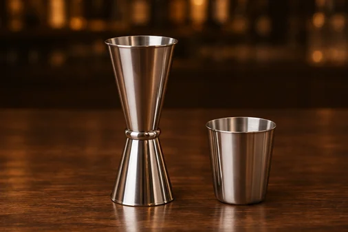
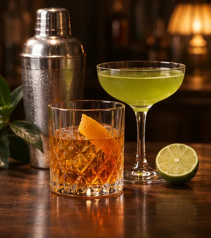
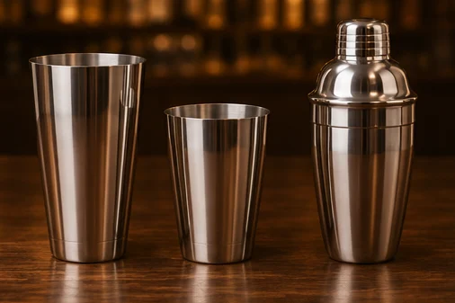
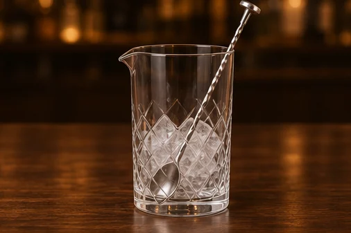
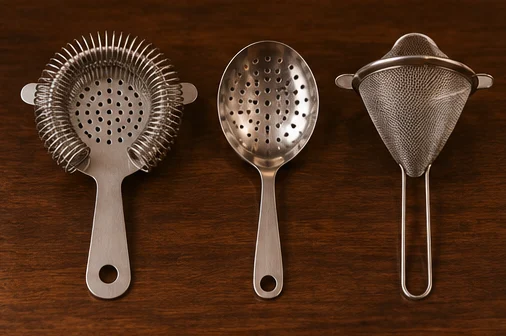
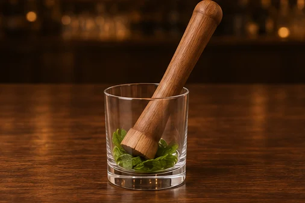
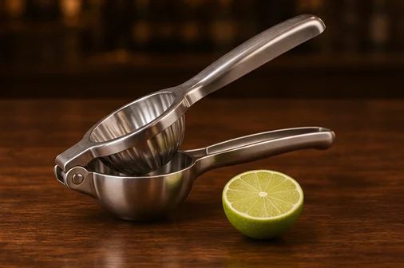
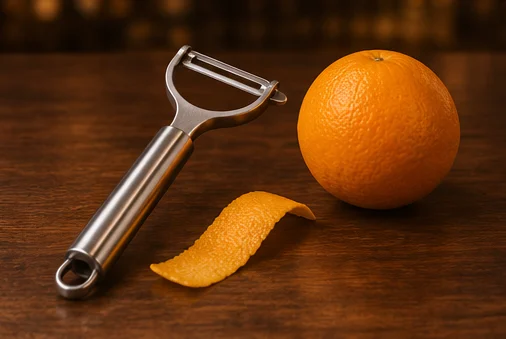
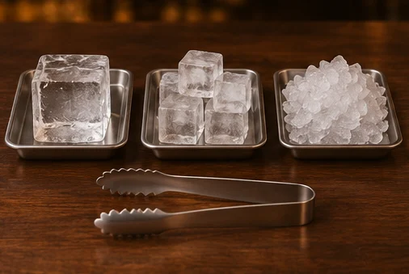
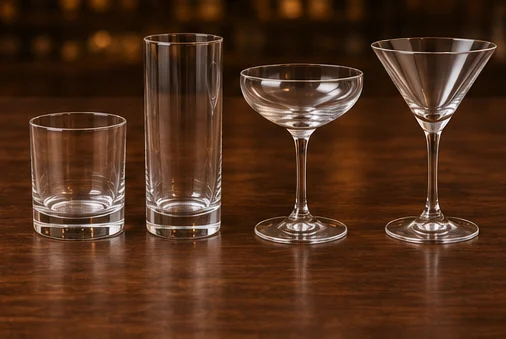

量酒器
量出基酒、果汁和糖浆，方便复做同一配比。
如何读刻度
稳定拿住量酒器，倒至内侧所需的毫升刻度，再把材料转入调酒容器。双头容量和中间刻度因型号而异，先认清每一边。
带毫升刻度的小量杯可替代。酒谱写的苦精「dash」是瓶口轻甩的次数，瓶口和动作都会影响出量。

按基酒或手法找配方。每份配方为一杯，配图为 AI 生成的外观示意。
喜欢某一杯时，可以沿着相近的材料和手法多试一种。每个版本都写明差异，配图为示意。
先选想做的酒，再备器具和材料。每张器具卡都有用法、常见区别和可练习的酒谱。图片为 AI 生成的器具示意。

量出基酒、果汁和糖浆，方便复做同一配比。
稳定拿住量酒器，倒至内侧所需的毫升刻度，再把材料转入调酒容器。双头容量和中间刻度因型号而异，先认清每一边。
带毫升刻度的小量杯可替代。酒谱写的苦精「dash」是瓶口轻甩的次数，瓶口和动作都会影响出量。

带冰摇和果汁、糖浆与酒，快速降温、融冰和混合。
波士顿壶由两个壶身组成，合紧后两手握牢摇动，开壶后配滤冰器。三件式壶有内置滤网，取下顶盖即可倒酒，缝隙和滤网也要拆开清洗。
先倒材料，最后加冰。摇完及时滤出。苏打水等有气饮料留到杯中最后加入。

用带倒口的容器搅拌冰块与酒液，适合保持酒液清澈。
把材料倒入杯中并加冰，让勺背贴杯壁，以稳定速度带动冰块转动。达到想要的温度和稀释程度后滤出。
带倒口的调酒杯方便出液，较大的雪克壶壶身也能用。吧勺的长柄便于伸到底部；把「吧勺」当计量单位时，先核对手上勺子的容量。

滤掉用过的冰块、果肉和碎叶，也能控制倒出后的稀释。
弹簧滤冰器（Hawthorne）搭雪克壶或调酒杯，用食指压住倒酒。勺型滤冰器（Julep）常贴在搅拌杯内侧。细网筛负责拦下更小的冰屑和果肉。
需要更平滑的口感时，用滤冰器拦大块，同时把手持细筛放在成品杯上方，做一次双重过滤。

轻压薄荷、捣开水果，也可在古典里压散浸湿的方糖。
用厚底杯或金属壶。薄荷用平头轻压，闻到香气即可；需要出汁的水果可略加力度。方糖先用少量水和苦精润湿，再边压边溶开。
木柄用后手洗并晾干。较软的材料可用干净的木勺柄轻压。

为代基里和玛格丽特准备鲜榨青柠汁，也能榨柠檬和橙。
洗净水果再对切。少量用手压式或旋拧式榨汁器即可，多个水果可以用带接汁碗的款式。滤去籽和粗果肉，再量出配方需要的毫升数。
尽量按需现榨，榨完立即冲掉果肉，尤其是压头与出汁孔。

削皮器取宽片果皮，小刀切橙片、青柠角和杯沿装饰。
用洗净的柑橘，削下一片带颜色的皮，少带白瓤。在杯上方让有颜色的一面朝向酒液，折压挤出皮油，再按酒谱放进杯里。
切果片时用稳固的砧板；先切好装饰，再开始给酒液加冰。

普通方冰负责摇和与搅拌，大方冰适合入杯慢饮，碎冰常用于需要快速降温的酒谱。
滤出时把调制用的冰留在壶里。成品酒谱需要带冰饮用时，用冰夹另取新冰入杯；直倒杯调按酒谱在杯内加冰。
用饮用水制冰，成冰后密封存放，减少沾到冰箱异味。相同重量下，碎冰通常接触面积更大。对比稀释程度时，先固定配方和其他条件。

古典杯留出放冰空间，高球杯容纳长饮，带脚鸡尾酒杯适合滤出后直接喝。
家用可按接近的容量替换。需要预冷时，先在杯内加冰，出杯前倒净冰与融水。
直接在饮用杯里完成。莫吉托先轻拌薄荷、糖和青柠，加冰与朗姆，最后加苏打水轻搅。
先备小量杯、够高的玻璃杯、可伸到杯底的长勺和冰。家里有这些就能试做。
在调酒杯里搅拌到酒液变凉，再滤进饮用杯。大道酒可以用来练习控制温度和融冰水。
先备量酒器、长勺、滤冰器和够深的容器，按酒谱选择预冷空杯或加新冰的杯子。
例如代基里，先量朗姆、青柠汁和糖，再加冰摇到壶身明显变凉，及时滤入预冷杯。
先备量酒器、雪克壶和滤冰器；果汁现榨。先用同一份配方和相近的冰量练习，再调整摇和时间。
烈酒加盖直立避光，利口酒按瓶身提示保存。甜红和干型味美思开瓶后加盖冷藏，并标上开瓶日期。鲜榨果汁尽量现做，糖浆用干净的密闭容器冷藏，写上制作日期。
拆开雪克壶的盖与滤网，用温水和洗洁精洗净果泥与糖分，冲净后分开晾干。细网筛可从背面冲掉果肉，木制捣棒手洗后晾干。冰夹、砧板和杯口也一并清洗。
记下实际用量、冰块大小和出杯方式。酸甜失衡时先核对果汁或糖浆用量，喝起来水味重时先看冰块状态和调制时长。每次只改一项，方便对照。